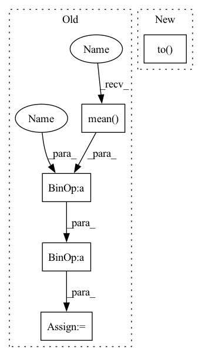

Pattern ID :36151
Before Change
n = real_features.shape[0]
m = fake_features.shape[0]
mean1 = real_features.mean(dim=0)
mean2 = fake_features.mean(dim=0)
diff1 = real_features - mean1
diff2 = fake_features - mean2
cov1 = 1.0 / (n - 1) * diff1.t().mm(diff1)
cov2 = 1.0 / (m - 1) * diff2.t().mm(diff2)
// compute fid
return _compute_fid(mean1, cov1, mean2, cov2).to(orig_dtype)After Change
cov_real = cov_real_num / (self.real_features_num_samples - 1)
cov_fake_num = self.fake_features_cov_sum - self.fake_features_num_samples * mean_fake.t().mm(mean_fake)
cov_fake = cov_fake_num / (self.fake_features_num_samples - 1)
return _compute_fid(mean_real.squeeze(0), cov_real, mean_fake.squeeze(0), cov_fake).to( self.orig_dtype)
def reset(self) -> None:
if not self.reset_real_features:
real_features_sum = deepcopy(self.real_features_sum)In pattern: SUPERPATTERN
Frequency: 4
Non-data size: 5
Instances Fragment ID: 102506556
Project Name: pytorchlightning/metrics
Commit Name: bad3607a58cc48367b9b176cb944ccc1b398d391
Time: 2022-09-05
Author: 33259879+nicolas-dufour@users.noreply.github.com
File Name: src/torchmetrics/image/fid.py
M Class Name: FrechetInceptionDistance
N Class Name: FrechetInceptionDistance
M Method Name: compute(1)
N Method Name: compute(1)
M Parent Class: Metric
N Parent Class: Metric
M File Name: src/torchmetrics/image/fid.py
N File Name: src/torchmetrics/image/fid.py
M Start Line: 262
M End Line: 280
N Start Line: 279
N End Line: 286
Before Change
// computation is extremely sensitive so it needs to happen in double precision
orig_dtype = real_features.dtype
real_features = real_features.double()
fake_features = fake_features.double()
// calculate mean and covariance
n = real_features.shape[0]
m = fake_features.shape[0]
mean1 = real_features.mean(dim=0)
mean2 = fake_features.mean(dim=0)
diff1 = real_features - mean1
diff2 = fake_features - mean2
cov1 = 1.0 / (n - 1) * diff1.t().mm(diff1)
cov2 = 1.0 / (m - 1) * diff2.t().mm(diff2)
// compute fid
return _compute_fid(mean1, cov1, mean2, cov2).to(orig_dtype)After Change
cov_real = cov_real_num / (self.real_features_num_samples - 1)
cov_fake_num = self.fake_features_cov_sum - self.fake_features_num_samples * mean_fake.t().mm(mean_fake)
cov_fake = cov_fake_num / (self.fake_features_num_samples - 1)
return _compute_fid(mean_real.squeeze(0), cov_real, mean_fake.squeeze(0), cov_fake).to( self.orig_dtype)
def reset(self) -> None:
if not self.reset_real_features:
real_features_sum = deepcopy(self.real_features_sum) Fragment ID: 102506557
Project Name: lightning-ai/metrics
Commit Name: bad3607a58cc48367b9b176cb944ccc1b398d391
Time: 2022-09-05
Author: 33259879+nicolas-dufour@users.noreply.github.com
File Name: src/torchmetrics/image/fid.py
M Class Name: FrechetInceptionDistance
N Class Name: FrechetInceptionDistance
M Method Name: compute(1)
N Method Name: compute(1)
M Parent Class: Metric
N Parent Class: Metric
M File Name: src/torchmetrics/image/fid.py
N File Name: src/torchmetrics/image/fid.py
M Start Line: 262
M End Line: 280
N Start Line: 279
N End Line: 286
Before Change
def barlow_twins_loss(z1, z2, lamb=5e-3):
z1 = (z1 - z1.mean( 0) ) / z1.std(0)
z2 = (z2 - z2.mean(0)) / z2.std(0)
N, D = z1.size()
After Change
N, D = z1.size()
// to match the original code
bn = torch.nn.BatchNorm1d(D, affine=False).to( z1.device)
z1 = bn(z1)
z2 = bn(z2)
corr = torch.einsum("bi, bj -> ij", z1, z2) / N Fragment ID: 102506558
Project Name: vturrisi/solo-learn
Commit Name: 51d70d946ebbf453ae7a90aeb4fc2be1b2efa392
Time: 2021-04-08
Author: vt.turrisi@gmail.com
File Name: losses/barlow_twins_loss.py
M Class Name: AnonimousClass
N Class Name: AnonimousClass
M Method Name: barlow_twins_loss(4)
N Method Name: barlow_twins_loss(3)
M Parent Class:
N Parent Class:
M File Name: losses/barlow_twins_loss.py
N File Name: losses/barlow_twins_loss.py
M Start Line: 5
M End Line: 14
N Start Line: 4
N End Line: 17